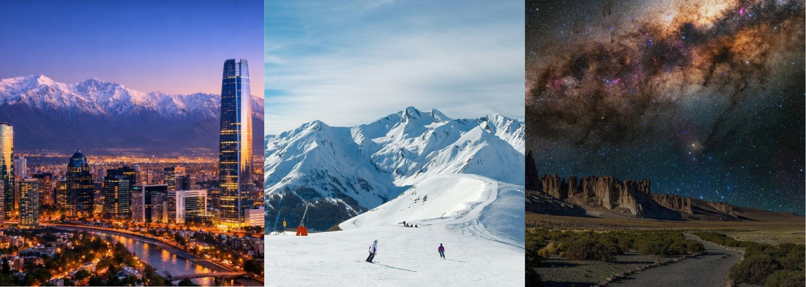
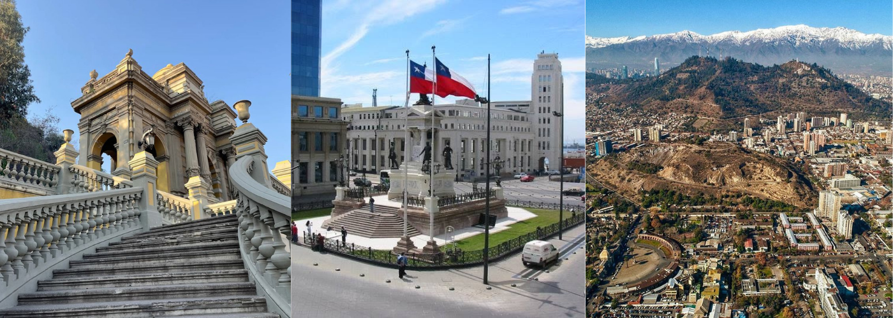
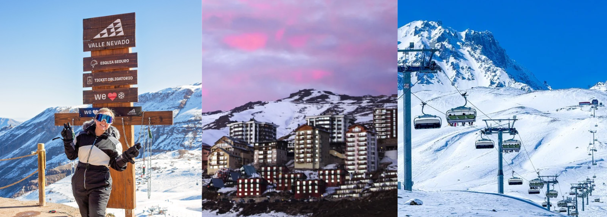
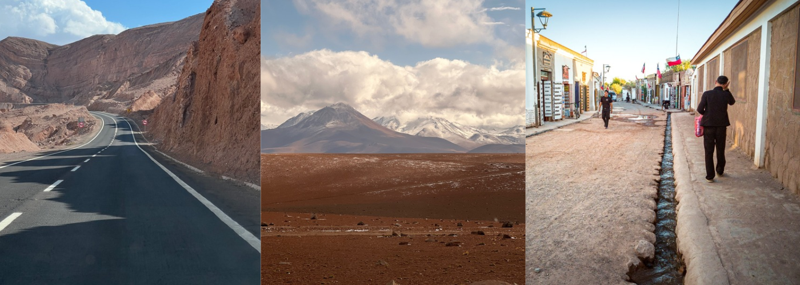
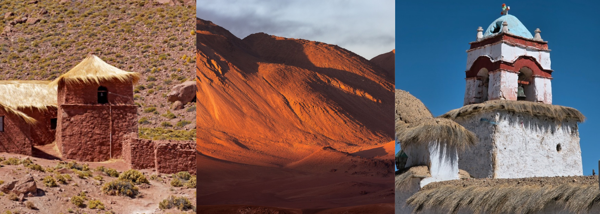
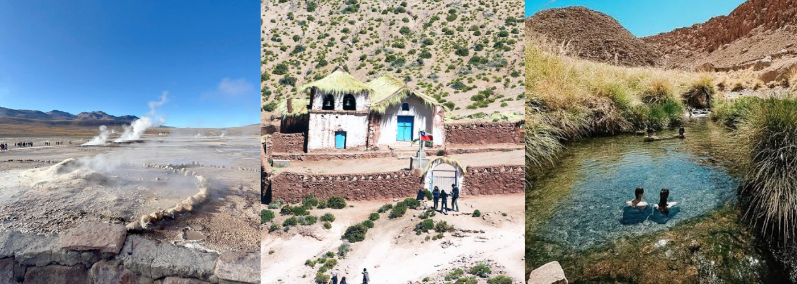
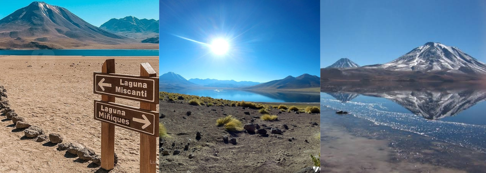

O Melhor do Chile: Santiago, Neve e Deserto do Atacama

Uma jornada contrastante de 7 dias que une a modernidade cosmopolita de Santiago, a imponência dos Andes e a magia mística do Atacama.
- Visto: brasileiros não precisam de visto para turismo no Chile, por até 90 dias.
- Documento: leve o RG em bom estado e emitido há menos de 10 anos, ou o passaporte. Na dúvida, o passaporte é mais seguro. A CNH não é aceita.
- Fuso horário: de abril a início de setembro, o Chile fica 1 hora atrás de Brasília. No restante do ano, o horário é o mesmo.
- Reservas: na alta temporada (janeiro, fevereiro, julho e feriados), passeios como o Vale da Lua e os Gêiseres do Tatio podem lotar. Reserve com antecedência.
ANTES DE IR
Etapa 1: Santiago e os Encantos Andinos
Dia 01: A Cidade e os Andes

- Chegada a Santiago, transporte ao hotel e recepção.
- Caminhada histórica pelo Cerro Santa Lucía e visita à Plaza de Armas.
- Subida ao Cerro San Cristóbal no final da tarde para contemplar o pôr do sol com vista para a Cordilheira dos Andes.
Dia 02: Neve e Montanha (Temporada de Inverno)

- Excursão de um dia inteiro para os centros de esqui na Cordilheira (Valle Nevado ou Farellones).
- Aproveite as paisagens nevadas impressionantes, pratique esportes de inverno ou relaxe apreciando um chocolate quente a mais de 3.000 metros de altitude.
Etapa 2: A Magia do Deserto do Atacama
Dia 03: Chegada a San Pedro do Atacama

- Voo curto de Santiago para Calama e traslado até o vilarejo místico de San Pedro do Atacama.
- Aclimatação e caminhada pelo centrinho de ruas de terra e arquitetura de adobe.
- Pôr do sol no Salar de Atacama (Laguna Chaxa) observando os flamingos em seu habitat natural.
Dia 04: Vale da Lua e Geologia Extrema

- Manhã livre para explorar as feiras locais e o artesanato andino.
- Tarde dedicada ao Vale da Lua e Vale da Morte, explorando dunas gigantes e formações de sal.
- Contemplação do espetacular pôr do sol na famosa Pedra do Coyote.
Dia 05: Gêiseres do Tatio e Termas de Puritama

- Saída de madrugada (por volta das 04h) rumo aos Gêiseres do Tatio, um campo geotérmico a 4.300 metros de altitude.
- Café da manhã especial preparado no vapor dos gêiseres.
- Retorno com parada no povoado ancestral de Machuca e banho relaxante nas águas quentes das Termas de Puritama.
Dia 06: Lagoas Altiplânicas e Tour Astronômico

- Passeio pelas deslumbrantes Lagunas Miscanti e Meñiques, emolduradas por vulcões cobertos de neve.
- À noite: Tour Astronômico inesquecível em um dos céus mais limpos do planeta, com observação guiada via telescópios profissionais.
Dia 07: Despedida do Deserto
- Manhã para compras de lembranças no centro de San Pedro do Atacama.
- Traslado ao aeroporto de Calama para voo de retorno a Santiago e conexão final.